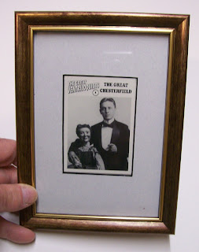

#37 Ventrilo-Card
5/10/2010
{kind=link}

The Great Chesterfield
(Card #1, Set #4)
Howard A. Olson was born in 1882. He taught himself ventriloquism while he was working at a silk wholesale house. His first figure, "Reddy Doyle", was made by Theo and Charlie Mack.
Howard was from a Swedish family that did not approve of show business, so he changed his stage name to The Great Chesterfield. His first show was at a small theater on State Street in Chicago. When the Great Lester played Chicago's Majestic Theater, Chesterfield often went to see him to learn from the master. The Great Chesterfield entertained many, including more than a million G.I.'s during World War II.
Chesterfield did and act with his seven year old son, Howie Olson, and billed it as "Chesterfield and Little LeRoy."
The Great Chesterfield died on Feb. 26, 1977 in Chicago.
Copyright 1995 OO-LA-LA, INK.
(Card #1, Set #4)
Howard A. Olson was born in 1882. He taught himself ventriloquism while he was working at a silk wholesale house. His first figure, "Reddy Doyle", was made by Theo and Charlie Mack.
Howard was from a Swedish family that did not approve of show business, so he changed his stage name to The Great Chesterfield. His first show was at a small theater on State Street in Chicago. When the Great Lester played Chicago's Majestic Theater, Chesterfield often went to see him to learn from the master. The Great Chesterfield entertained many, including more than a million G.I.'s during World War II.
Chesterfield did and act with his seven year old son, Howie Olson, and billed it as "Chesterfield and Little LeRoy."
The Great Chesterfield died on Feb. 26, 1977 in Chicago.
Copyright 1995 OO-LA-LA, INK.
* * * * *
This framed Collector Card has been won in today's drawing by William Smith.
Contact Mr. D to claim your prize.